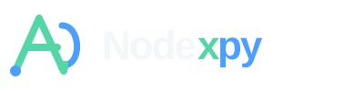
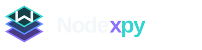

Function Loop
Function notation becomes a routed execution path with explicit input and output ports.
PYTHON CONCEPTThis round prioritizes marks that can become recognizable product icons rather than relying only on workflow-node symbolism.



